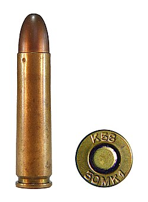

HOME
LIST
SHOP
The .30 carbine (7.62×33mm) is a rimless carbine/rifle cartridge used in the M1 carbine introduced in the 1940s. It is a light rifle round[2][3][4][5] designed to be fired from the M1 carbine's 18-inch (458 mm) barrel.
